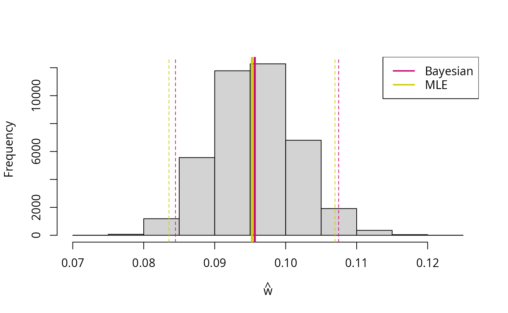

Estimating the genotype error probability, \(w\)
A simple example:
cases <- wgsLR::sample_data_Hp(n = 1000, w = 0.1, p = c(0.25, 0.25, 0.5))
tab <- table(cases$X_D, cases$X_S)
tab
#>
#> 0 1 2
#> 0 274 57 10
#> 1 68 107 74
#> 2 12 79 319Maximum likelihood estimation
w_mle <- wgsLR::estimate_w(tab)
w_mle
#> [1] 0.09798955
w_mle_se <- wgsLR::estimate_w_se(tab, w_mle)
w_mle_se
#> [1] 0.005975463The last lines estimate the standard error that will be used below to construct approximate confidence intervals.
Bayesian inference
The package contains a simple Metropolis-Hastings sampler (also see the “Using Stan for Bayesian inference” vignette):
w_b <- wgsLR::estimate_w_bayesian(tab) |> lapply(\(x) x$samples) |> unlist()
w_b_q <- quantile(w_b, c(0.025, 0.975))
hist(w_b, main = NULL, xlab = expression(hat(w)))
abline(v = mean(w_b), col = "deeppink3", lwd = 3)
abline(v = w_b_q[1], col = "deeppink3", lty = 2)
abline(v = w_b_q[2], col = "deeppink3", lty = 2)
abline(v = w_mle, col = "yellow3", lwd = 3)
abline(v = w_mle - 2*w_mle_se, col = "yellow3", lty = 2)
abline(v = w_mle + 2*w_mle_se, col = "yellow3", lty = 2)
legend("topright", col = c("deeppink3", "yellow3"), legend = c("Bayesian", "MLE"), lty = 1, lwd = 2)
The dashed lines indicate approximate confidence intervals (maximum likelihood estimation) and credible interval (Bayesian inference).
Calculating likelihood ratios (\(LR\)’s)
No errors and matching genotypes:
LR_contribs <- wgsLR::calc_LRs(xs = c(0, 0),
xd = c(0, 0),
w = 0,
p = c(0.25, 0.25, 0.5))
prod(LR_contribs)
#> [1] 16No errors and non-matching genotypes:
LR_contribs <- wgsLR::calc_LRs(xs = c(0, 0),
xd = c(1, 0),
w = 0,
p = c(0.25, 0.25, 0.5))
prod(LR_contribs)
#> [1] 0Errors possible and matching genotypes:
LR_contribs <- wgsLR::calc_LRs(xs = c(0, 0),
xd = c(0, 0),
w = 0.001,
p = c(0.25, 0.25, 0.5))
prod(LR_contribs)
#> [1] 15.936Errors possible and non-matching genotypes:
Verifying formulas
The usual \(LR\) values, \(\frac{1}{p_{Z^S}}\) for matches and \(0\) for non-matches, are obtained when
setting \(w = 0\). For example with
both packages wgsLR and caracas loaded we can
do the following:
library(caracas)
LR <- d_prob_LR$expr
LRw0 <- sapply(LR, \(x) as_sym(x) |> subs("w", 0) |> as_character())
with(d_prob_LR, cbind(XD_MA, XS_MA, LRw0))
#> XD_MA XS_MA LRw0
#> [1,] "0" "0" "1/p_0"
#> [2,] "0" "1" "0"
#> [3,] "0" "2" "0"
#> [4,] "1" "0" "0"
#> [5,] "1" "1" "1/p_1"
#> [6,] "1" "2" "0"
#> [7,] "2" "0" "0"
#> [8,] "2" "1" "0"
#> [9,] "2" "2" "1/p_2"